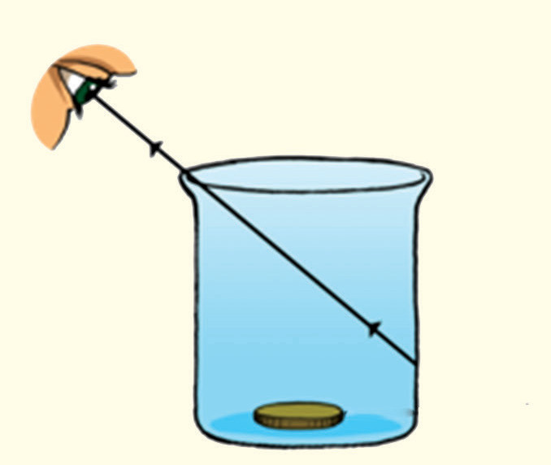
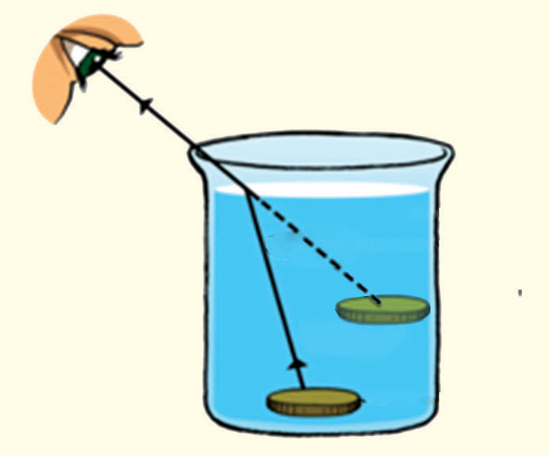

- 3. In a straight line, slowly move away from the bucket to a point where the coin is just outside your line of view. That is, the coin is not visible. Mark this point as M.
- 4. Pour gently clear water into the bucket and try to view the coin while standing at point M.
- 5. Continue adding more water until the coin can be seen when viewed from point M as in Figure 5.1.


Figure 5.1
Questions
(a) Explain why the coin can be seen when the water is added, but not before?
(b) Why does the coin become visible from point M after filling the bucket with water?
(c) Does the coin appear raised? Explain.
(d) Suggest other materials that can be used to demonstrate the refraction of light, besides water used in this activity.
The coin appears raised due to the change of direction of rays of light at the boundary between water and air, as shown in Figure 5.1.
Angle of incidence and angle of refraction
When light passes from a medium such as air to another medium such as glass, which is optically denser than the first medium, its velocity decreases. Conversely, when light passes from an optically denser medium such as glass to a medium that is optically less dense like air, its velocity increases. The line that is perpendicular to the boundary between the two media through which light travels is called the normal line. The ray of light in the first medium is called the incident ray and the ray of light in the second medium is called the refracted ray. The angle between the incident ray and the normal line is known as the angle of incidence and is denoted by the letter i. On the other hand, the angle between the refracted ray and the normal line is called the angle of refraction, denoted by r. Figure 5.2, shows the normal line, the incident ray, the refracted ray, the angle of incidence (i) and the angle of refraction (r).
Physics Form 2 Final.indd 164
03/04/2026 14:21